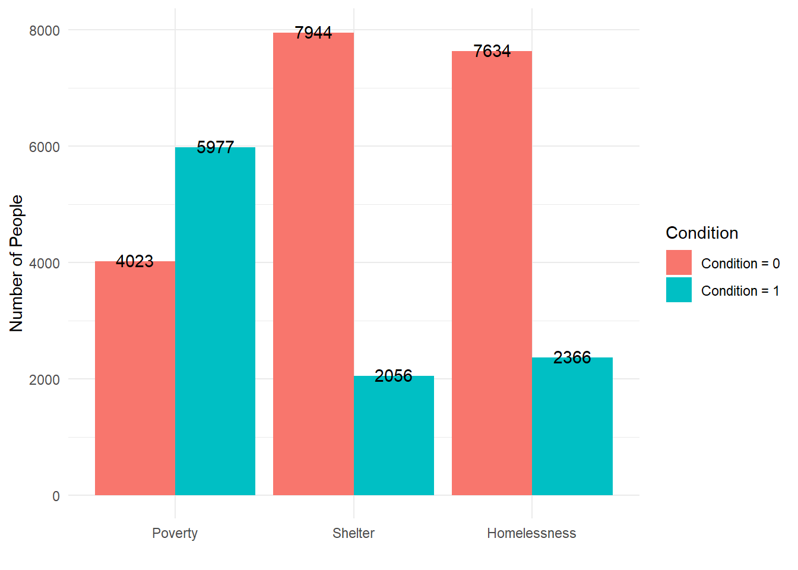
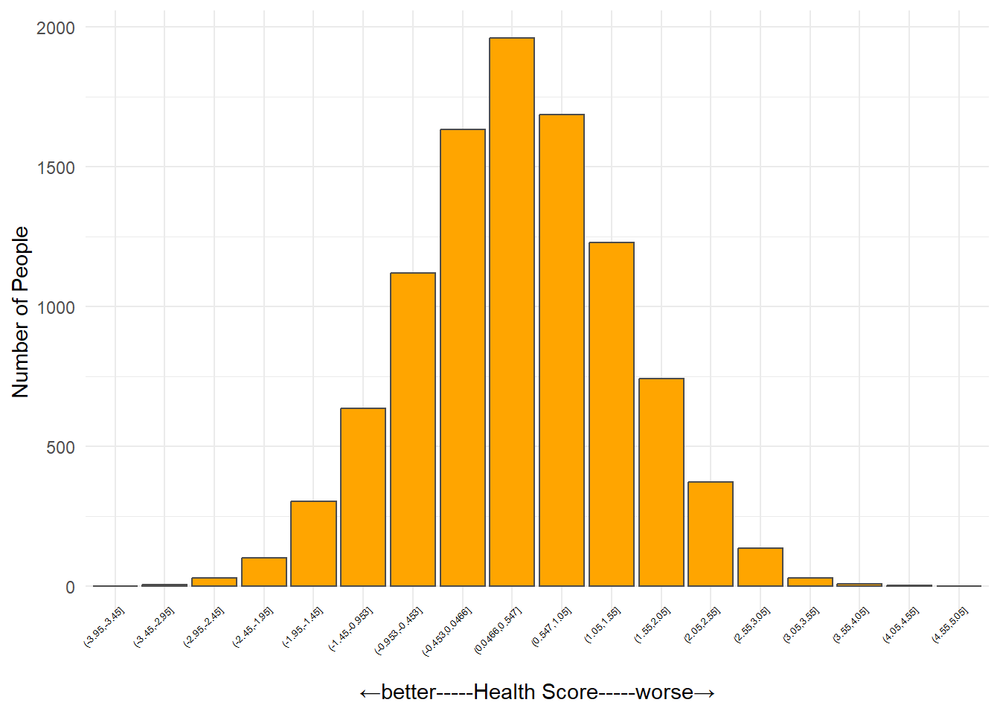
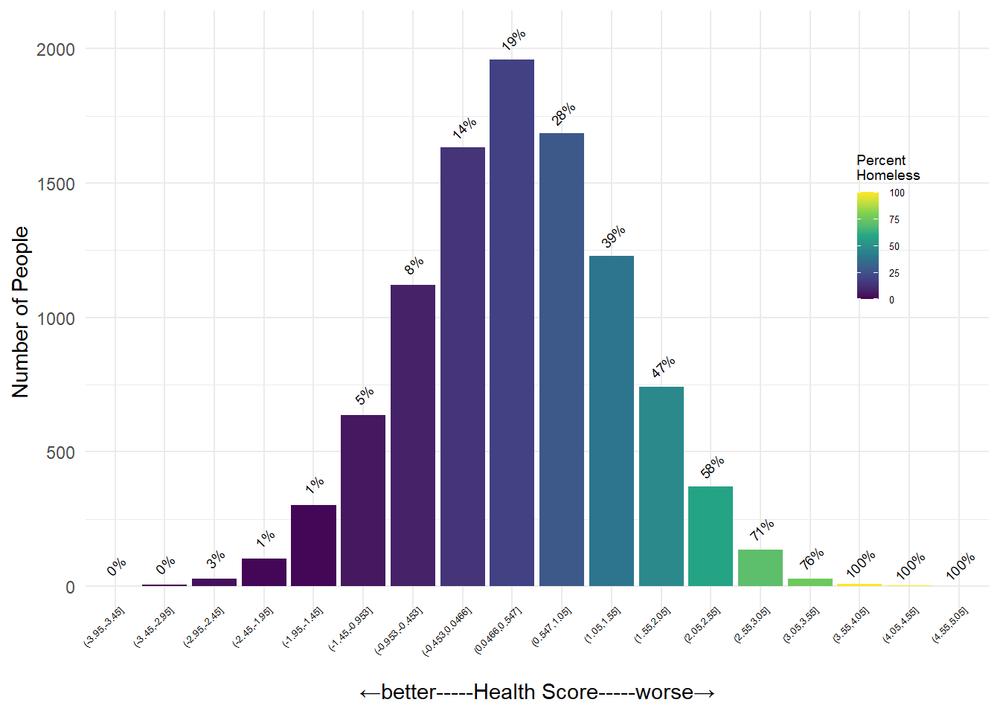
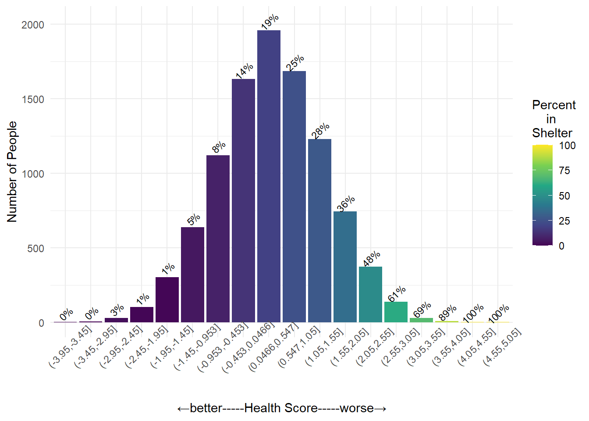
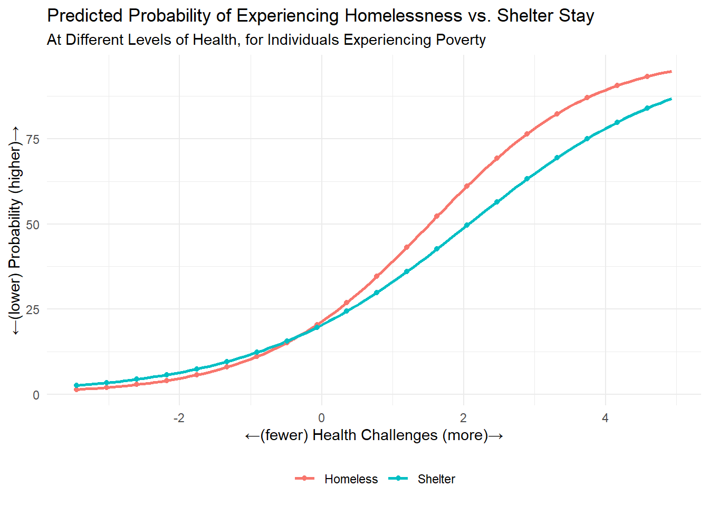

knitr::opts_chunk$set(echo = TRUE)
#install.packages("DiagrammeR")
library(DiagrammeR)
library(plotly)
library(corrplot)
library(tidyverse)
library(reactable)Label bias occurs when an outcome of interest is difficult to observe or capture in data, and we use a closely related variable that is observable as a stand-in (i.e., label or proxy) (Mhasawade et al., 2024). For example, homeless populations are notoriously difficult to observe, and thus capture in administrative data.
On the other hand, service providers keep detailed records on the individuals seeking to stay at local shelters. So if we’re interested in determining the need for local homeless services, we might decide to use shelter stays as stand-in for homelessness. The problem is that many homeless individuals never stay at a shelter. As a result, any decisions made based on an analysis that uses shelter stays to represent homelessness may be biased by the exclusion of an important part of the overall homeless population (those without a shelter stay).
“If you’re not mentally all the way there, then you’re not going to actively seek help to fix the situation that you’re in, you know. So I think, … your mental state should be taken care of because we can put people in houses or put them in shelters. But are they actively working with the psychiatrist? Are they actively working with the mental health [system]?” - Data Chat Participant.
grViz("
digraph DAG {
# Node definitions
node [shape = ellipse, style = filled, fillcolor = LightSkyBlue, fontname = Helvetica]
Poverty [label = 'Poverty']
Health [label = 'Health issue']
Homelessness [label = 'Homelessness']
Shelter [label = 'Shelter']
# Edge definitions with labels
Poverty -> Homelessness [label = '+', fontsize=18]
Poverty -> Health [label = '+', fontsize=18]
Homelessness -> Shelter [label = '+', fontsize=18]
Health -> Shelter [label = '-', fontsize=18]
Health -> Homelessness [label = '+', fontsize=18]
}
")To illustrate how label bias can occur, and what it might look like, we’ll create an example dataset, df, consisting of 10,000 administrative records for 10,000 made up people.
df is an individual-level (one record per person) dataset containing the following information about each individual:
Poverty:
Health:
Homelessness:
Shelter:
set.seed(42)
N <- 10000
# Poverty: exogenous variable (binary for simplicity)
Poverty <- rbinom(N, 1, 0.6) # 60% in poverty
# Health issues: affected by Poverty (+), more poverty -> more health issues
Health <- 0.6 * Poverty + rnorm(N, mean=0, sd=1) # continuous
# Homelessness: affected by Poverty (+) and Health issues (+) plus random shock
Homelessness_score <- 0.7 * Poverty + 0.5 * Health + rnorm(N, mean=0, sd=1) #temporary variable used to assign a binary "Homelessness" value
Homelessness <- ifelse(Homelessness_score > 1.5, 1, 0) # binary outcome; Homeless=1 for any individual with a homelessness_score > 1.5
# Shelter: affected by Homelessness (+) plus random shock and Health (negatively when health issues are high)
# Calculate mean and SD of Health
health_mean <- mean(Health)
health_sd <- sd(Health)
# Indicator for high health issues
high_health_issue <- ifelse(Health > (health_mean + 0.5*health_sd), 1, 0)
# Shelter score: negative effect only for high health issues
Shelter_score <- Homelessness_score - 1.3 * high_health_issue + rnorm(N, mean=0, sd=0.5) #temporary variable used to assign a binary "Shelter" value
Shelter <- ifelse(Shelter_score > 0.4 & Homelessness == 1, 1, 0) # binary outcome
# Assemble data frame
df <- data.frame(
Poverty = Poverty,
Health = Health,
Homelessness = Homelessness,
Shelter = Shelter
)
df_long <- df %>%
pivot_longer(-Health) %>%
mutate(health_bins = cut(Health, breaks = seq(min(df$Health)-.5, max(df$Health)+.5, by = 0.5))) %>%
group_by(name, health_bins) %>%
summarise(
n1 = sum(value),
n = n(),
pct = round(n1 / n * 100)
) %>%
ungroup()
Here are the first few records in our simulated dataset
# Summary and correlation
df %>%
summarise(across(everything(), list(mean = mean,min = min,max = max))) %>%
t() %>%
as.data.frame() %>%
mutate(V1 = round(V1, 3)) %>%
rownames_to_column() %>%
separate(rowname, into = c("variable", "stat"), sep = "_") %>%
pivot_wider(names_from = variable, values_from = V1) %>%
reactable::reactable()## Shelter Homelessness Poverty n
## 1 0 0 0 3658
## 2 0 0 1 3976
## 3 0 1 0 49
## 4 0 1 1 261
## 5 1 1 0 316
## 6 1 1 1 1740## Shelter Poverty n
## 1 0 0 3707
## 2 0 1 4237
## 3 1 0 316
## 4 1 1 1740by_df <- df %>%
select(-Health) %>%
rownames_to_column() %>%
pivot_longer(-rowname) %>%
count(name, value) %>%
ungroup() %>%
mutate(value = if_else(value == 0, "Condition = 0", "Condition = 1"),
name = factor(name, ordered = TRUE, levels = c("Poverty", "Shelter", "Homelessness")))
df %>%
group_by(Homelessness, Shelter) %>%
summarise(
n_people = n(),
mean_poverty = mean(Poverty),
mean_health = mean(Health)
) %>%
ungroup() ## # A tibble: 3 × 5
## Homelessness Shelter n_people mean_poverty mean_health
## <dbl> <dbl> <int> <dbl> <dbl>
## 1 0 0 7634 0.521 0.136
## 2 1 0 310 0.842 1.57
## 3 1 1 2056 0.846 0.962
Counts of individuals within each of the three binary variables (Poverty, Shelter, and Homelessness)

This figure shows the number of people at different levels of health (people with similar health scores are grouped into one of 15 health score ‘bins’)
df %>%
mutate(health_bins = cut(Health, breaks = seq(min(df$Health)-.5, max(df$Health)+.5, by = 0.5))) %>%
count(health_bins) %>%
ungroup() %>%
ggplot( aes(x = health_bins, y = n)) +
geom_col( fill = "orange", color = "gray30") +
theme_minimal() +
labs(
x = "←better-----Health Score-----worse→",
y = "Number of People") +
theme(
axis.text.x = element_text(angle = 45, size = 5, vjust = 1.4, hjust = 1, colour = "black")
)
This figure shows the percent of people within each Health Score bin experiencing homelessness (Homelessness = 1)
df_long %>%
filter(name == "Homelessness") %>%
ggplot(aes(x = health_bins, y = n, fill = pct), alpha = .55) +
geom_col() +
scale_fill_viridis_c() +
geom_text(aes(y = n + 80, label = paste0(pct, "%")), size = 2.5, angle = 45) +
theme_minimal() +
labs(
x = "←better-----Health Score-----worse→",
y = "Number of People",
fill = "Percent\nHomeless") +
theme(
axis.text.x = element_text(angle = 45, size = 5, vjust = 1.4, hjust = 1, colour = "black"),
legend.position = "inside",
legend.justification.inside = c(0.93, 0.7),
legend.key.size = unit(0.75, "lines"),
legend.title = element_text(size = 7),
legend.text = element_text(size = 5)
)
This figure shows the percent of people within each Health Score bin who are experiencing homelessness with a shelter stay (Shelter = 1). Comparing this graph with the previous one, the rates of homelessness (with or without a shelter stay) are close to identical for people with relatively fewer health concerns. As we continue looking further to the right, however, we can see some differences between the rates of homelessness vs. shelter for people with more health challenges.
df_long %>%
filter(name == "Shelter") %>%
ggplot(aes(x = health_bins, y = n, fill = pct), alpha = 0.6) +
geom_col() +
scale_fill_viridis_c() +
geom_text(aes(y = n + 60, label = paste0(pct, "%")), size = 2.9, angle = 45) +
theme_minimal() +
labs(
x = "←better-----Health Score-----worse→",
y = "Number of People",
fill = "Percent\n in\nShelter") +
theme(
axis.text.x = element_text(angle = 45)
)
# Logistic regression: Homelessness ~ Poverty + Health
model_homeless <- glm(Homelessness ~ Poverty + Health, data = df, family = binomial)
summary(model_homeless)##
## Call:
## glm(formula = Homelessness ~ Poverty + Health, family = binomial,
## data = df)
##
## Coefficients:
## Estimate Std. Error z value Pr(>|z|)
## (Intercept) -2.57616 0.05949 -43.30 <2e-16 ***
## Poverty 1.27027 0.06422 19.78 <2e-16 ***
## Health 0.85747 0.02920 29.36 <2e-16 ***
## ---
## Signif. codes: 0 '***' 0.001 '**' 0.01 '*' 0.05 '.' 0.1 ' ' 1
##
## (Dispersion parameter for binomial family taken to be 1)
##
## Null deviance: 10942.6 on 9999 degrees of freedom
## Residual deviance: 9039.9 on 9997 degrees of freedom
## AIC: 9045.9
##
## Number of Fisher Scoring iterations: 5# Logistic regression: Shelter ~ Poverty + Health
model_shelter <- glm(Shelter ~ Poverty + Health, data = df, family = binomial)
summary(model_shelter)##
## Call:
## glm(formula = Shelter ~ Poverty + Health, family = binomial,
## data = df)
##
## Coefficients:
## Estimate Std. Error z value Pr(>|z|)
## (Intercept) -2.63004 0.06133 -42.88 <2e-16 ***
## Poverty 1.26248 0.06725 18.77 <2e-16 ***
## Health 0.65875 0.02835 23.24 <2e-16 ***
## ---
## Signif. codes: 0 '***' 0.001 '**' 0.01 '*' 0.05 '.' 0.1 ' ' 1
##
## (Dispersion parameter for binomial family taken to be 1)
##
## Null deviance: 10161.4 on 9999 degrees of freedom
## Residual deviance: 8823.5 on 9997 degrees of freedom
## AIC: 8829.5
##
## Number of Fisher Scoring iterations: 5We can do a lot with the results of a regression model, as in the code above. We can learn about the relationships between the input variables (i.e., “independent”, “upstream”, or “cause” variables. Everything after the ~) and the outcome.
## [1] -3.453357 -3.368696 -3.284035 -3.199373 -3.114712 -3.030051## [1] 4.504786 4.589447 4.674108 4.758769 4.843430 4.928091